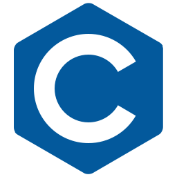
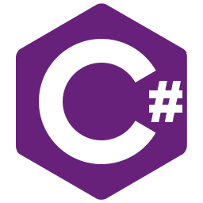
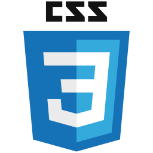
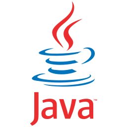
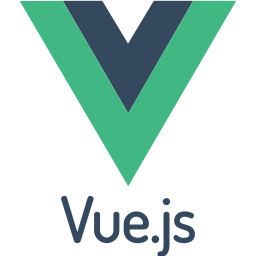
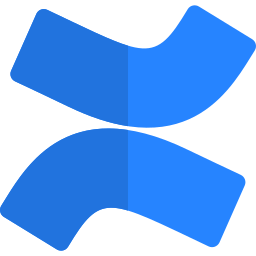
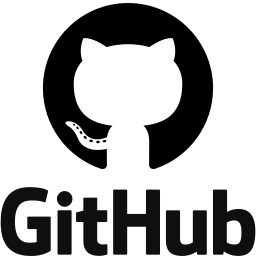

Software Engineer
Pushing the boundaries of what is possible
858-254-4859
San Diego, CA
nwill711@gmail.com
linkedin.com/in/nwill711
Education
California State University, Northridge
Bachelor's degree in Computer Science
August 2020 - May 2023
- Attended CSUN August 2020 through Dececmber 2020 graduating in the spring of 2023.
- At CSUN, I focussed on game dev while also following interests in databases and web dev.
- CSUN was rated the No. 2 public university in California according to the Wall Street Journal/College Pulse 2024
Work Experience
Gamestar - Contract QA Engineer
January 2021 - March 2022
- Interactive streaming platform built for games such as Scene It? and Family Feud
- Identified recurring problems with the quality of the product.
- Documented blocker bugs and raised priority fixes to developers
- Performed black box testing on multiple platforms to ensure the applicaiton meets the initially set requirements
Verimatrix - Engineering Assistant
July 2016 - August 2019
- Cybersecurity solutions that protect video content, streaming media, mobile applications, webtsites, and APIs
- Automated status reports for product owners/managers on a weekly basis
- Responsible for planning, tracking, and status reporting for program objectives, team objectives, risks, and releases
- Coordinated quarterly Program Increment(PI) planning activities under Scaled Agile Framework (SAFe)
- Facilitated the communication of the goals of the PI, team breakouts and commitments, as well as the identificaiton of risks and dependencies
Projects
Image to 3D Model
Created a 3d model in blender from a single image.
- This program uses python scripts to read in .jpg or .png, process the photo to import to blender and create a 3d model of the region of interest from the image.
Portfolio Website
Developed, designed, and styled a portfolio website that allows users immediate and constant access to developer's information.
- This website is designed to keep the developer's contact information at forefront of the user's search.
Web-Based Blog
Designed and implemented a database schema for managing a social network website. Created user registration and database initialization that creates and populates necessary tables automatically.
- Created with HTML, CSS, PHP, SQL
QA, Quit Anytime - Unity Game
Planned, designed and created a game with a satirical view on the life of a QA engineer at an indie game company.
- Created in Unity, used mongodb to store, retrieve and display data
Sports Hub - Sports Statistic Website
- Designed, planned, created a website that displayed stats of all NBA players, teams, leagues, etc.
- Parsed data collected from an external server using API calls.
- Website was created with vue.js, html and css.
Technical Skills

C

C#

CSS
HTML

Java
PHP

Python

Vue.js

Confluence

Github
Jira